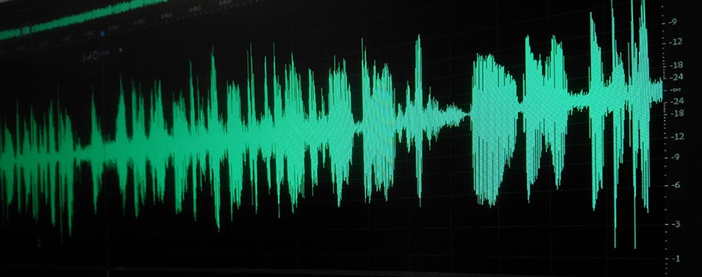

 Dois especialistas em segurança da Salesforce apresentaram resultados de uma pesquisa que expôs a fragilidade de sistemas de "reconhecimento" ou "autenticação" por voz. A dupla, formada por John Seymour e Azeem Aqil, descobriu que é possível "treinar" um software para gerar falas de outra pessoa com apenas dez minutos de gravações da voz da vítima. Gerando sons semelhantes à fala da vítima, um hacker poderia criar uma voz impostora para dar qualquer comando a um sistema controlado por voz.
A pesquisa foi apresentada na conferência de segurança Black Hat em Las Vegas, nos Estados Unidos, na quinta-feira (9). A conclusão dos especialistas é que sistemas controlados por voz são inseguros.